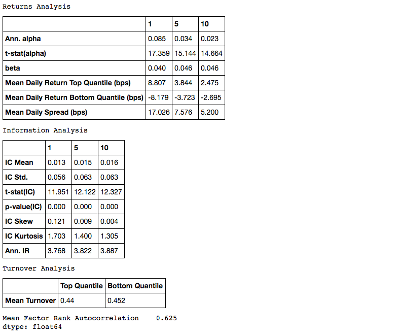
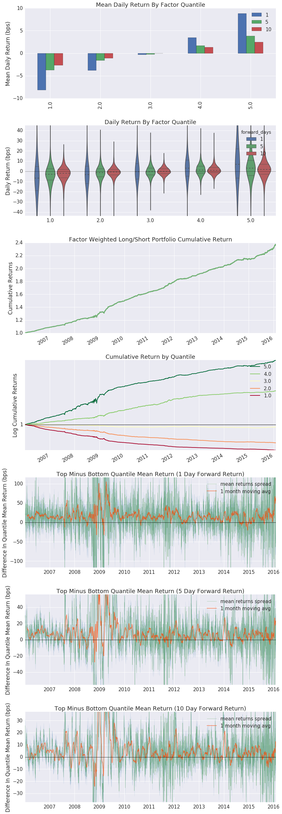
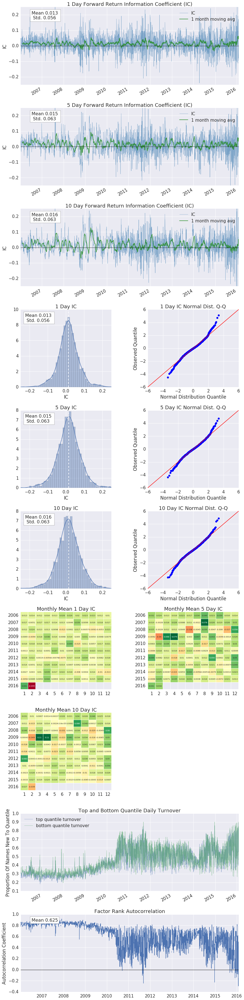
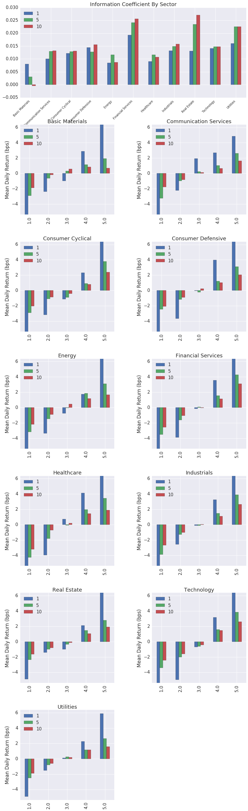

Alphalens is a Python library for performance analysis of predictive (alpha) stock factors. Alphalens works great with the Zipline open source backtesting library, and Pyfolio which provides performance and risk analysis of financial portfolios.
The main function of Alphalens is to surface the most relevant statistics and plots about an alpha factor, including:
Returns Analysis
Information Coefficient Analysis
Turnover Analysis
Grouped Analysis
Maintenance and new projects#
We continue to maintain Alphalens Reloaded for bug, security and compatibility fixes. Our new development focuses on ML4T Diagnostic. For new projects, evaluate it through the factor-analysis migration guide, which includes a runnable example and explains the differences between the workflows. See the Diagnostic documentation and the ML4T website for the current libraries and their workflows.
Getting started#
With a signal and pricing data creating a factor “tear sheet” is a two step process:
import alphalens
# Ingest and format data
factor_data = alphalens.utils.get_clean_factor_and_forward_returns(my_factor,
pricing,
quantiles=5,
groupby=ticker_sector,
groupby_labels=sector_names)
# Run analysis
alphalens.tears.create_full_tear_sheet(factor_data)
Learn more#
Check out the example notebooks for more on how to read and use the factor tear sheet.
Installation#
The next release supports Python 3.11-3.15. Python 3.10 and older are no longer supported; previous release artifacts remain available. Python 3.15 requires pandas 3; earlier supported Python versions also support pandas 1.5 and 2.x. Native tests, built wheels and Conda packages have been qualified on Linux, macOS and Windows. These source changes do not alter previously published releases.
Install with pip:
pip install alphalens-reloaded
Install with conda:
conda install -c ml4t alphalens-reloaded
Install from the master branch of Alphalens repository (development code):
pip install git+https://github.com/stefan-jansen/alphalens-reloaded
Alphalens depends on:
NumPy >=2.0 requires pandas >=2.2.2. Upgrade older pandas versions before using NumPy 2 to avoid compatibility issues.
Usage#
A good way to get started is to run the examples in a Jupyter notebook.
To get set up with an example, you can:
Run a Jupyter notebook server via:
jupyter notebook
From the notebook list page(usually found at http://localhost:8888/), navigate over to the examples directory, and open any file with a .ipynb extension.
Execute the code in a notebook cell by clicking on it and hitting Shift+Enter.
Questions?#
If you find a bug, feel free to open an issue on our github tracker.
Contribute#
Read the contribution guide for maintenance scope, review requirements and local checks.
If you want to contribute, a great place to start would be the help-wanted issues.
Credits#
Jessica Stauth (jstauth@quantopian.com)
For a full list of contributors see the contributors page.
Example Tear Sheets#
Example factor courtesy of ExtractAlpha
Peformance Metrics Tables#


Returns Tear Sheet#


Information Coefficient Tear Sheet#


Sector Tear Sheet#


- Overview
- Returns Analysis
- Information Analysis
- Turnover Analysis
- Event Style Returns Analysis
- Groupwise Performance
- Summary Tear Sheet
- The Whole Thing
- Intraday Factor
- Imports & Settings
- Loading Data
- Factor Computation
- Run Alphalens
- Event Study
- Imports & Settings
- Load Data
- Factor Computation
- Run Event Study
- Pyfolio Integration
- API
- Tear Sheets
- Performance Metrics
average_cumulative_return_by_quantile()common_start_returns()compute_mean_returns_spread()create_pyfolio_input()cumulative_returns()factor_alpha_beta()factor_cumulative_returns()factor_information_coefficient()factor_positions()factor_rank_autocorrelation()factor_returns()factor_weights()mean_information_coefficient()mean_return_by_quantile()positions()quantile_turnover()
- Plotting Functions
axes_style()customize()plot_cumulative_returns()plot_cumulative_returns_by_quantile()plot_events_distribution()plot_factor_rank_auto_correlation()plot_ic_by_group()plot_ic_hist()plot_ic_qq()plot_ic_ts()plot_information_table()plot_mean_quantile_returns_spread_time_series()plot_monthly_ic_heatmap()plot_quantile_average_cumulative_return()plot_quantile_returns_bar()plot_quantile_returns_violin()plot_quantile_statistics_table()plot_returns_table()plot_top_bottom_quantile_turnover()plot_turnover_table()plotting_context()
- Utilities
MaxLossExceededErrorNonMatchingTimezoneErroradd_custom_calendar_timedelta()backshift_returns_series()compute_forward_returns()demean_forward_returns()diff_custom_calendar_timedeltas()get_clean_factor()get_clean_factor_and_forward_returns()get_forward_returns_columns()infer_trading_calendar()make_naive_ts()non_unique_bin_edges_error()print_table()quantize_factor()rate_of_return()rethrow()std_conversion()timedelta_strings_to_integers()timedelta_to_string()turnover_periods_from_columns()
- Migrating factor analysis